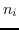
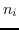
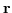
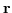
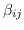
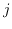
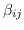
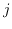

Next: Lotka-Volterra Dynamics
Up: Eco Lab Documentation
Previous: Eco Lab coding style
Contents
Index
The Eco Lab Model
The Eco Lab model is but one model implemented using the Eco Lab
software. This section documents the model itself, and may be skipped
if your intention is to use Eco Lab for other models.
We start with a generalised form of the Lotka-Volterra equation
Here  is the population density, the component  being the
number of individuals of species
is the population density, the component  being the
number of individuals of species  ,  is the difference
between reproduction and death,
,  is the difference
between reproduction and death,  is the interaction matrix,
with  being the interaction between species and , *
referring to elementwise multiplication and mutate is the
mutation operator.
is the interaction matrix,
with  being the interaction between species and , *
referring to elementwise multiplication and mutate is the
mutation operator.
Subsections
Russell Standish
2014-09-10